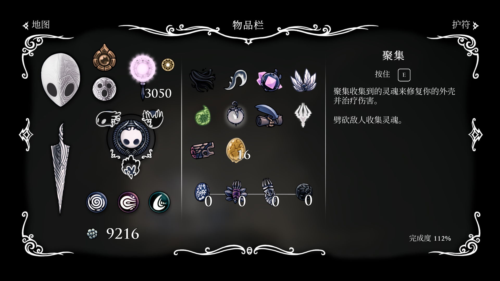
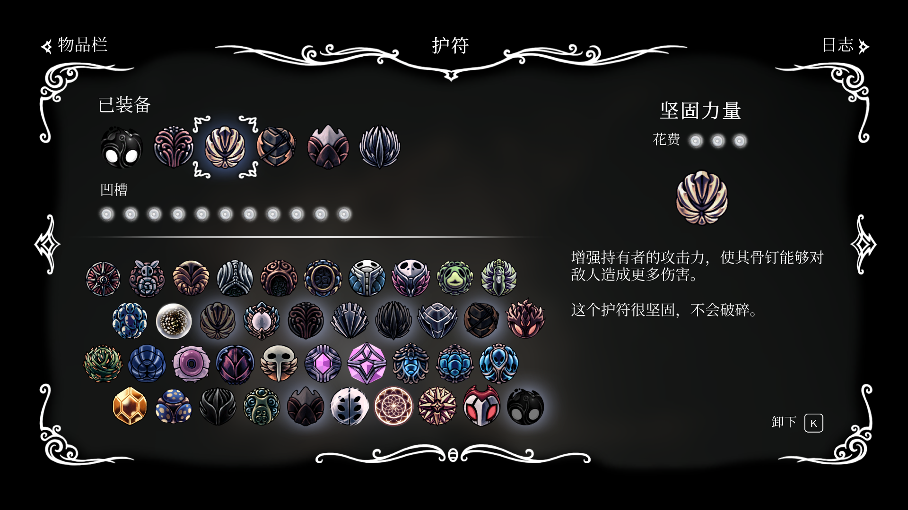
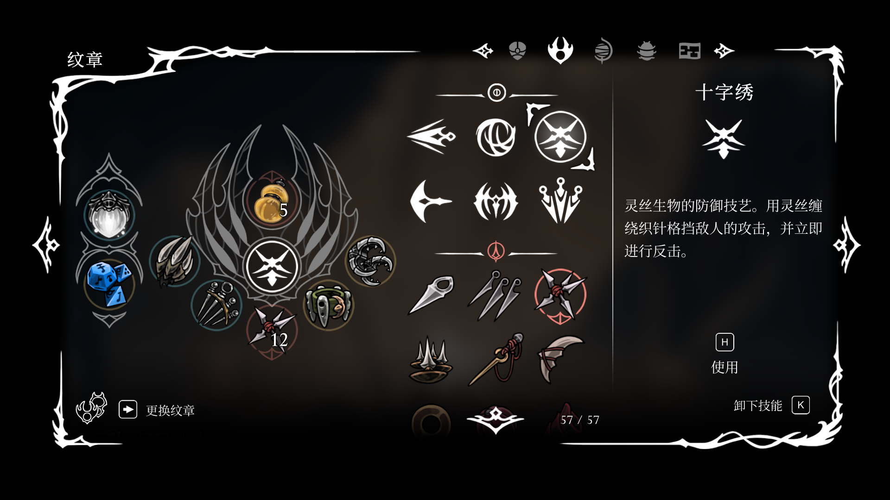
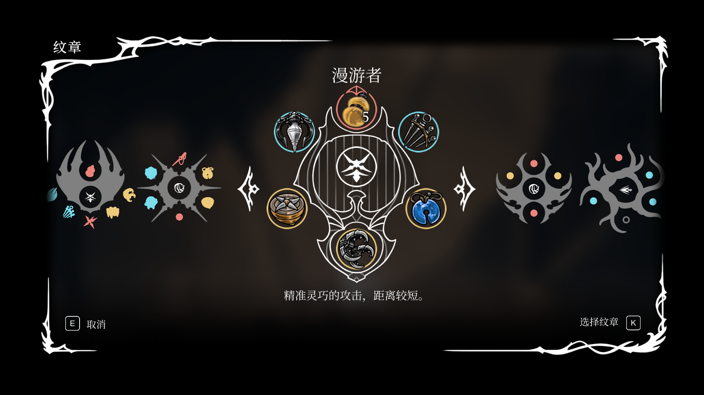

This the stage where the story happened.
The story of Silksong is after Hollow Knight; Hallownest's princess, Hornet, was captured by a mysterious creature. She must embark on a perilous pilgrimage to uncover the truth behind her exile.
This the stage where the story happened.
As a sequel to Hollow Knight, Silksong carries on the signature combat feel of its predecessor, while further accelerating the combat pacing and character mobility.
This is Hollow Knight's battle system:


This is Silk Song's:

